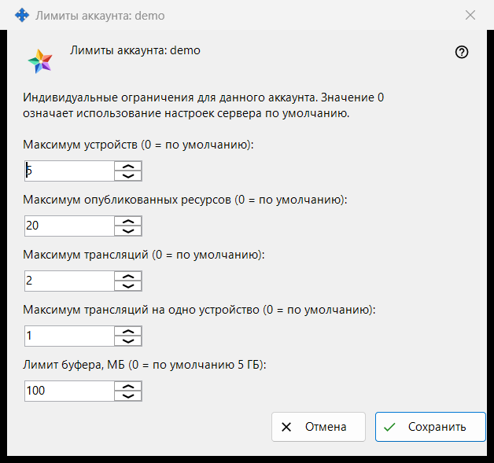
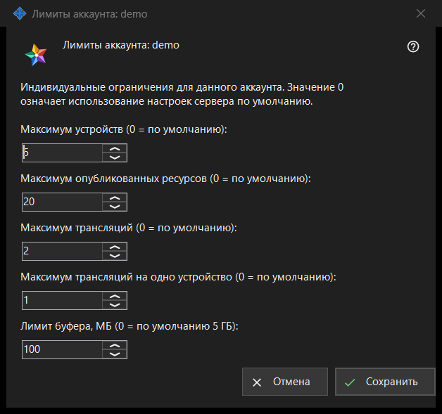

Лимиты аккаунта
Назначение
Задаёт индивидуальные ограничения для одной учётной записи Media Exchange Server, которым вы управляете; значение 0 означает настройки сервера по умолчанию. Окно открывается кнопкой «Лимиты..» под списком учётных записей на странице Media Exchange Server в настройках Share Manager; кнопка появляется, когда выбрана учётная запись. В заголовке окна указан логин: «Лимиты аккаунта: <логин>».


Порядок действий
- Выберите учётную запись и нажмите «Лимиты..».
- Введите число для каждого ограничения, которое хотите изменить, а для остальных оставьте 0 (значение сервера по умолчанию).
- Нажмите «Сохранить».
- Прочтите строку итога: «Лимиты аккаунта <логин> сохранены.»
Элементы окна
Устройства и ресурсы
«Максимум устройств (0 = по умолчанию):» ограничивает число устройств, которые могут войти в учётную запись. «Максимум опубликованных ресурсов (0 = по умолчанию):» ограничивает число общих папок и других ресурсов, которые учётная запись может опубликовать на сервере.
Трансляции
«Максимум трансляций (0 = по умолчанию):» ограничивает трансляции всей учётной записи, а «Максимум трансляций на одно устройство (0 = по умолчанию):» - то, что может начать одно её устройство.
Лимит буфера
«Лимит буфера, МБ (0 = по умолчанию 5 ГБ):» задаёт наибольший объём значения, которое учётная запись может отправить в свой буфер обмена на сервере, в целых мегабайтах. Лимит, хранящийся в меньших единицах, например 512 КБ, показывается как 0 и сохраняет точный размер, если вы не меняете это поле.
Сохранить и отменить
«Сохранить» заменяет собственные лимиты учётной записи целиком: каждое число больше 0 становится лимитом, каждый 0 означает значение сервера по умолчанию, а пять нулей снимают все индивидуальные ограничения. «Отмена» ничего не меняет. Если сервер отклоняет значение, строка итога называет причину, например «Предел не принят: нужно целое число в границах, которые принимает сервер.»
Настройки менеджера · Настройки общего доступа SFTP · Настройки сервера обмена